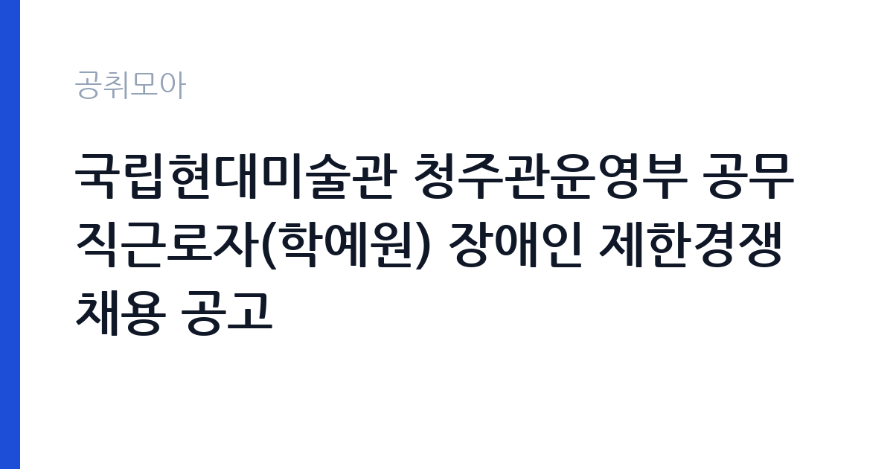

[국가기관] 국립현대미술관 청주관운영부 공무직근로자(학예원) 장애인 제한경쟁채용 공고
문화체육관광부 국립현대미술관 청주관운영부 · 충북 · 마감 2026-10-29 (D-11) · 출처 나라일터

한눈에 보는 모집 조건
| 기관 | 문화체육관광부 국립현대미술관 청주관운영부 |
|---|---|
| 공고명 | 국립현대미술관 청주관운영부 공무직근로자(학예원) 장애인 제한경쟁채용 공고 |
| 고용형태 | 공무직 |
| 근무지 | 충북 |
| 게시일 | 2026-10-19 |
| 마감일 | 2026-10-29 (D-11) |
지원자격, 이렇게 읽으세요
- 공무직(학예원) 1명
- 접수 ~2026-10-29 마감
- 세부 조건은 원문 공고문 확인
이 공고는 장애인 제한경쟁입니다. 장애인고용촉진 및 직업재활법에 따른 장애인으로 등록되어 있어야 하고, 이를 증명하는 서류를 제출해야 합니다. 학예원 직무는 전시와 소장품 관리 보조이므로, 미술 관련 전공이나 학예 업무 경험이 서류 평가에서 유리합니다. 국가공무원법상 결격사유가 없어야 하며, 공무직 근로자 관리규정에 따른 채용 결격사유도 적용됩니다. 응시 연령과 학력 요건은 공고문에 별도로 명시되어 있으므로 원문을 확인해야 합니다.
이 공고의 포인트
가장 큰 매력은 고용 형태입니다. 공무직은 기간의 정함이 없는 무기계약으로, 계약 만료로 인한 고용 불안이 없고 정년이 만 60세로 정해져 있습니다. 국립현대미술관은 문화체육관광부 소속 국립기관이라 처우와 복무 체계가 공무직 규정에 따라 안정적으로 운영됩니다. 청주관은 국립현대미술관의 네 번째 관으로 수장고와 전시 기능을 함께 갖추고 있어, 소장품 관리 실무를 깊이 배울 수 있는 현장입니다. 장애인 제한경쟁이라 응시 가능 인원이 한정되어 경쟁 부담도 상대적으로 낮습니다.
전형은 어떻게 진행되나
전형은 서류전형과 면접전형으로 진행되며, 서류전형 합격자 발표는 2026년 11월 6일로 예고되어 있습니다. 서류에서는 장애인 자격과 직무 관련 경력을 확인하고, 면접에서는 전시·소장품 관리 업무에 대한 이해와 근무 의지를 평가합니다. 접수는 이메일과 방문 모두 가능하고, 마감일 10월 29일 오후 6시까지 도착분만 인정됩니다. 담당 부서는 청주관운영부 학예연구팀이며 문의는 043-261-1470입니다. 제출서류 목록과 양식은 공고문 첨부를 그대로 따라야 합니다.
원문에서 확인한 전형 방식
국립현대미술관 청주관운영부에서 다음과 같이 공무직 근로자를 채용하고자 하오니 역량 있는 분들의 많은 지원 바랍니다. 1. 채용분야/인원/계약기간 ㅇ 채용분야 : 공무직 근로자(학예원) ㅇ 채용인원 : 총 1명 ㅇ 계약기간 - 공무직 : 계약일 ~ 기한의 정함이 없음(학예원 정년 만 60세) 2. 담당업무(자세한 사항은 공고문 참고) ㅇ 전시보조 및 학예업무 ㅇ 수장고, 소장품 관리 및 출납 보조 ㅇ 전시 운송 · 설치 용역 및 관리 보조 ㅇ기타 미술관이 필요하다고 인정하여 부여하는 업무 3. 전형일정 가. 서류접수 : 2026. 10. 19.(월) ~ 10. 29.(목), 전자우편(이메일) 및 방문 접수 * 마감일(10.29.(목)) 18:00까지 도착분에 한함 나. 관련문의 : 국립현대미술관 청주관운영부 학예연구팀(043-261-1470) 다. 서류전형 합격자 발표 : 2026. 11. 6.(금)/ 문화체육관광부, 국립현대미술관 등 홈페이지 공지 라. 면접전형 심사일 : 2025. 11. 11.(수) * 서류전형 합격자 발표 시 세부 시간 및 장소 공지 마. 최종합격자 발표 : 2026. 11. 18.(수)/ 문화체육관광부, 국립현대미술관 등 홈페이지 공지
이런 분께 추천해요
- 미술관·박물관에서 전시나 소장품 관리 업무를 경험한 지원자
- 미술사·큐레이터 관련 전공으로 현장 실무를 시작하려는 장애인 구직자
- 무기계약직으로 안정적으로 근무하며 학예 실무를 익히고 싶은 분
지원 전 체크리스트
- 장애인 등록 증명서를 발급받아 첨부했는가
- 마감일 18시 도착 기준을 확인했는가
- 전시·소장품 관련 경력을 서류에 구체적으로 적었는가
- 공무직 결격사유와 응시자격 요건을 대조했는가
모집 일정과 제출 타이밍
접수는 2026년 10월 19일부터 29일 오후 6시까지입니다. 서류전형 합격자 발표는 11월 6일로 예정되어 있고, 이후 면접전형과 최종합격자 발표가 이어집니다. 공무직 채용은 신체검사와 결격사유 조회를 거치는 경우가 많으므로 최종 단계까지 일정이 길어질 수 있습니다. 마감일이 목요일 저녁이므로 이메일 접수는 오후 늦게 몰리는 시간대를 피해 낮에 보내는 편이 안전합니다. 일정은 기관 사정에 따라 조정될 수 있습니다.
직무 이해하기: 국가기관
학예원은 전시와 소장품 관리의 실무를 보조합니다. 전시 기획과 운영을 지원하고, 수장고의 소장품 관리와 출납 업무를 돕습니다. 전시 운송과 설치 용역을 관리하고, 작품의 상태와 이동 경로를 기록합니다. 전시장 환경 점검과 기타 미술관이 필요하다고 인정하는 업무도 포함됩니다. 작품을 직접 다루는 자리이므로 세심함과 기록의 정확성이 무엇보다 중요하고, 학예연구사와 협업하는 실무형 직무입니다.
자기소개서 작성 팁
자기소개서는 작품을 다룬 구체적 경험으로 채우는 것이 좋습니다. 어떤 전시에서 어떤 역할을 맡았고, 작품 상태를 어떻게 기록하고 관리했는지를 서술하세요. 장애인 제한경쟁이라고 해서 직무 역량을 낮춰 쓰면 안 됩니다. 오히려 업무 환경을 어떻게 극복하고 적응했는지, 필요한 지원이 무엇인지를 담담하게 밝히는 편이 신뢰를 줍니다. 지원동기에서는 청주관의 성격, 즉 수장고와 전시 기능을 함께 갖춘 국립미술관이라는 점에 주목한 이유를 쓰면 직무 이해도가 드러납니다.
면접 준비 포인트
면접에서는 소장품 관리의 기본 원칙을 아는지 확인합니다. 작품의 온습도 관리, 반입과 반출 절차, 상태 기록 방식 같은 실무 지식이 질문으로 나올 수 있습니다. 전시 설치 과정에서 일정이 지연될 때 어떻게 대응할지, 학예연구사와 의견이 다를 때 어떻게 조율할지도 준비하세요. 공무직으로서의 복무 자세와 장기 근무 의지도 평가 대상입니다. 답변은 실제 경험의 순서를 따라 구체적으로 말하는 것이 가장 안전합니다.
급여·근무조건 읽는 법
공무직근로자의 보수는 국립현대미술관의 공무직 보수 기준에 따라 지급되며, 기본급과 각종 수당, 정기 상여로 구성됩니다. 이 공고문에는 보수 금액이 요약되어 있지 않으므로, 정확한 금액과 수당 체계는 원문 공고문의 보수 항목이나 청주관운영부 학예연구팀(043-261-1470)으로 확인해야 합니다. 공무직은 기간의 정함이 없는 계약으로 정년이 만 60세이고, 4대보험과 퇴직급여, 각종 복지 제도가 기관 규정에 따라 적용됩니다. 초임 수준은 경력과 직무 등급에 따라 달라지므로 채용 담당자에게 확인하는 편이 정확합니다.
자주 묻는 질문
- 장애인만 지원할 수 있나요
네. 이 공고는 장애인 제한경쟁 채용입니다. 장애인고용촉진 및 직업재활법에 따른 장애인 등록자여야 하며, 증명서류를 제출해야 합니다. - 계약 기간이 정해져 있나요
아니요. 공무직으로서 기한의 정함이 없고, 학예원 정년은 만 60세입니다. - 접수 마감은 언제인가요
2026년 10월 29일 오후 6시까지 도착분에 한합니다. 이메일과 방문 접수가 모두 가능합니다.
함께 보면 좋은 공고
[국가기관] 「충남대학교 AI인재양성부트캠프사업단」 전담직원(팀원) 공개 채용 공고 — 마감 2026-10-25[국가기관] 충남대학교 브랜드 단과대학 사업 연구교수 공개채용 공고 — 마감 2026-10-26[국가기관] 충남대학교 브랜드 단과대학 사업 기간제계약직(행정원) 공개채용 공고 — 마감 2026-10-26출처: 나라일터 공개정보를 바탕으로 공취모아가 정리한 안내글입니다. 모집 조건·일정은 변경될 수 있으니 지원 전 반드시 원문 공고문을 확인하세요. 본 글은 정보 제공용이며 합격을 보장하지 않습니다.